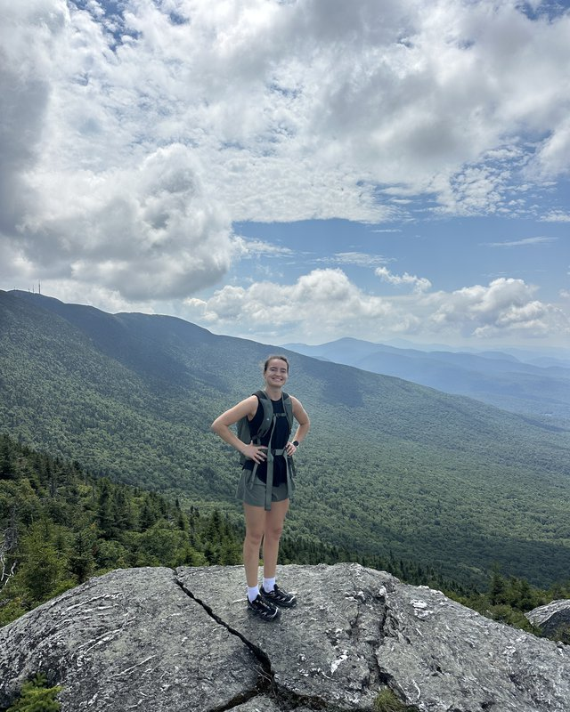
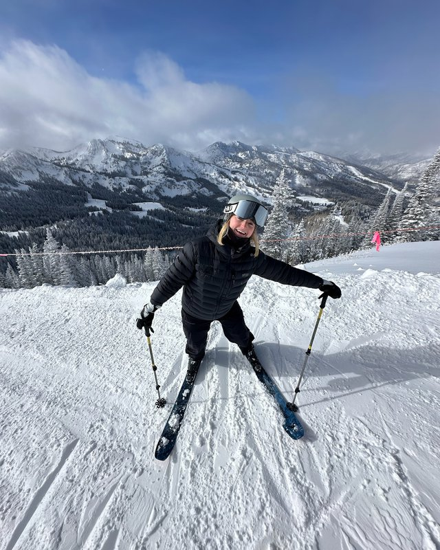
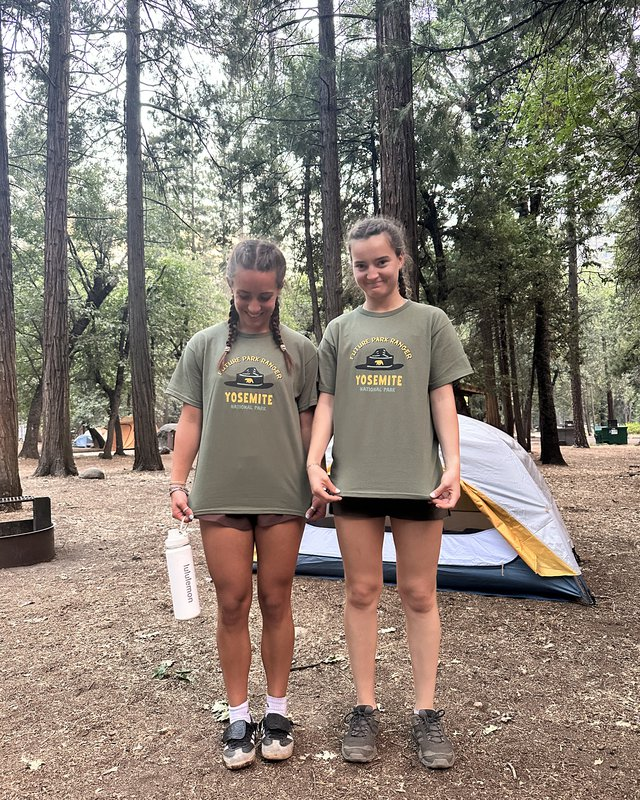
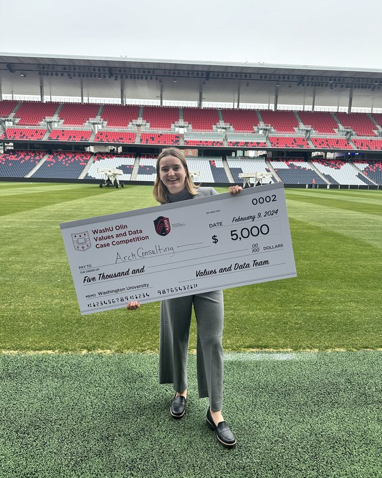
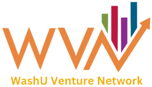
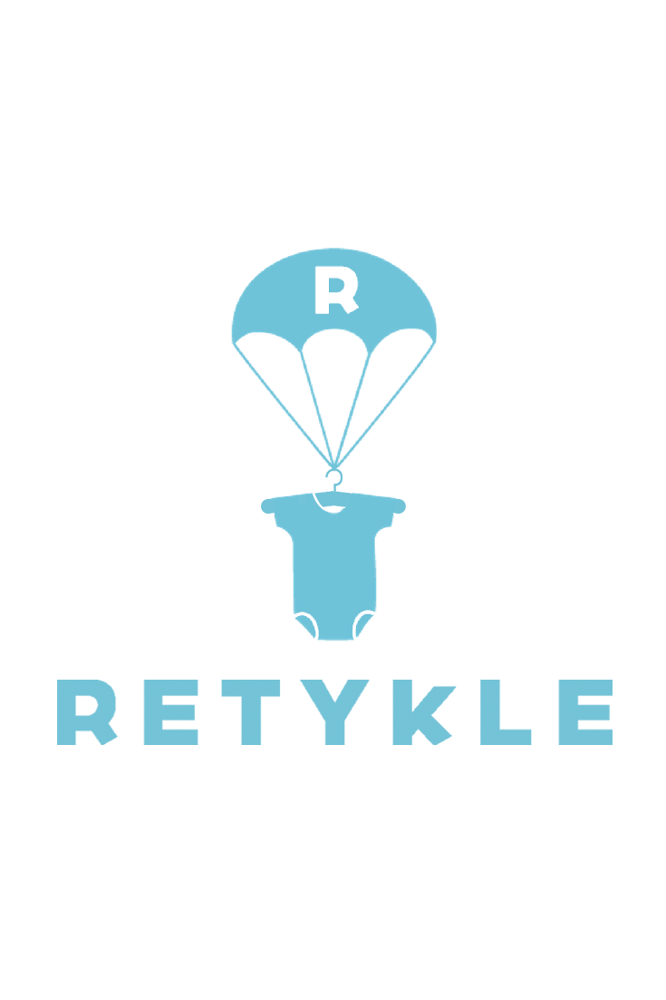
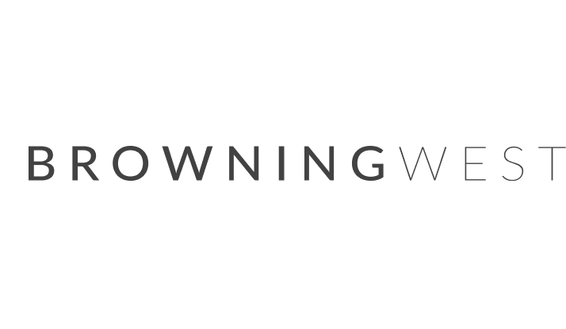
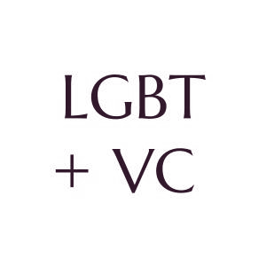
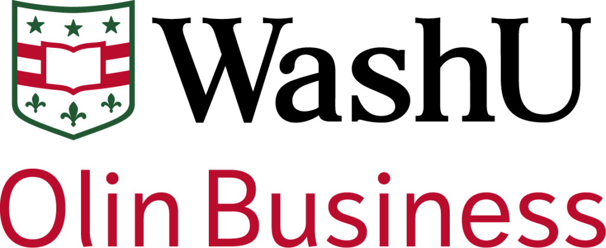

Vermont · St. Louis · New York City
EMILIA
DE JOUNGE
Exploring myself and the world.
About
I'm currently studying Finance, Entrepreneurship, and Psychology at WashU, and I'll be returning to Insight Partners as an Investor in 2027.
Originally from Vermont, I grew up as a competitive freeskier and coached for four years. I'm an avid hiker, a Liverpool fan, and working my way through the national parks.
Throughout college, I've worked across startups, venture capital, and finance.
Until then, I'm filling life with exploratory projects, meaningful connections, and personal challenges.
I have plenty of time to chat! Reach out if you'd like to connect.




Professional
Where I've spent my time

Insight Partners is a global venture capital and private equity firm that invests in high-growth software companies. I sourced and evaluated potential investments by speaking directly with founders, analyzing financial data, and building investment theses. I'll be returning to Insight as an Investor in September 2027.


The WashU Venture Network connects students with alumni and professionals in venture capital, private equity, and startups. As an analyst, I help lead due diligence for potential investments, contribute to decisions on Arch Grants follow-on funding, and support efforts to teach WashU students about venture capital through workshops and resources. Competed on the Venture Capital Investment Competition team (2025), winning the Midwest regional.


Retykle is a global circular fashion marketplace that connects sellers and buyers of premium secondhand children's clothing, enabling families to extend the lifecycle of high-quality apparel while earning a share of each sale. As a business development intern, I worked across operations, strategy, and marketing, gaining exposure to all aspects of the business. I led projects to redesign the customer service process, supported market expansion through research and analysis, and contributed to initiatives aimed at increasing sales and identifying new growth opportunities.


Browning West is a fundamental, research-driven investment firm that takes a long-term, concentrated approach to public equities. The firm focuses on deep due diligence and active engagement with portfolio companies, often holding investments for several years. As a summer intern, I helped the team evaluate potential investments by conducting industry research, financial analysis, and competitive benchmarking.


LGBT+ VC is a fellowship program that supports LGBTQ+ representation in venture capital and entrepreneurship. As a fellow, I participate in weekly sessions with investors and founders to deepen my understanding of the VC landscape. I also source startups, write industry deep dives, and profile firms to help expand inclusive investment opportunities and elevate underrepresented founders.


Through WashU Olin's global consulting program, I worked with two startups in Spain and Bosnia to refine their market strategies. I helped assess international expansion opportunities using tools like PESTEL and SWOT, and worked directly with founders to improve product positioning. Our team delivered go-to-market plans and final presentations with tailored recommendations based on each company's unique challenges and goals.
GiftAMeal is a social impact startup that helps provide meals to those in need through restaurant partnerships. As a business development intern, I led outreach efforts to potential clients, created pitch materials, and helped sign new partners. I also managed social media content across platforms and researched new philanthropic opportunities to support the company's growth strategy.
Creative
Behind the camera
Cinematography, photography, and media are long-term interests.
Latest on Instagram
Koch Center Podcast
Worked as a creative associate — managed logistics and scheduling, brainstormed topics and guests, edited episodes and shaped content.
Listen on Fireside → Instagram@emiliathexplorer
A running visual journal — skiing, hiking, and everything shot along the way.
Follow along →Off the clock
What I do with the rest of my time
Skiing
Grew up as a competitive freeskier, coached it for four years, then ski raced in high school.
Hiking
Always loved hiking and traveling — planning the Long Trail for summer 2027.
Women's sports
Soccer, basketball, and everything in between.
EPL
Liverpool, specifically. No further explanation needed.
National Parks
13 down, 63 to go.
Currently reading
Let My People Go Surfing by Yvon Chouinard.